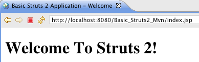

You can download this complete example project, Basic_Struts2_Mvn, from Google Code - http://code.google.com/p/struts2-examples/downloads/list. After unzipping the download you should have a folder named Basic_Struts2_Mvn. In that folder is a README.txt file that has instructions for building and running this example.
| This tutorial assumes you know how to create a Java web application that uses Maven to manage artifacts and build the web application archive (war) file. |
Step 1 - Create A Java Web Application
In your Java IDE create a Java web application with a project name of Basic_Struts2_Mvn that follows the standard Maven project folder structure. In your pom.xml include the following:
<build> <finalName>Basic_Struts2_Mvn</finalName> </build>
Step 2 - Add index.jsp
Our next step is to add a simple index.jsp to this web application. Create an index.jsp under src/main/webapp with a title of "Basic Struts 2 Application - Welcome" and in the body add an h1 heading of "Welcome to Struts 2!"
Run mvn clean package to create the war file. Copy the war file into your Servlet container so that it will deploy the war file.
Start up your Servlet container and in a web browser go to http://localhost:8080/Basic_Struts2_Mvn/index.jsp. You should see the following:

Step 3 - Add Struts 2 Jar Files To Class Path
Now that we know we have a working Java web application, lets add the minimal required Struts 2 framework Jar files to our web application's class path. In pom.xml add the following dependency node:
<dependency> <groupId>org.apache.struts</groupId> <artifactId>struts2-core</artifactId> <version>X.X.X.X</version> </dependency>
Of course replace the X.X.X.X with the current Struts 2 version. Maven will get the struts2-core jar and the other jar files struts2-core requires (transitive dependencies). (NOTE: Beginning with Struts version 2.2.3 you do not need to specify a separate dependency node for javassist.)
Step 4 - Add Logging
To see what's happening under the hood, the example application for this tutorial uses log4j. You'll need to add to pom.xml a dependency node for the log4j jar file:
<dependency> <groupId>log4j</groupId> <artifactId>log4j</artifactId> <version>1.2.14</version> </dependency>
Setup a log4j.xml configuration in the src/main/resources folder. You can copy the one from the example application, which contains the following
<?xml version="1.0" encoding="UTF-8" ?> <!DOCTYPE log4j:configuration PUBLIC "-//log4j/log4j Configuration//EN" "log4j.dtd"> <log4j:configuration xmlns:log4j="http://jakarta.apache.org/log4j/"> <appender name="STDOUT" class="org.apache.log4j.ConsoleAppender"> <layout class="org.apache.log4j.PatternLayout"> <param name="ConversionPattern" value="%d %-5p %c.%M:%L - %m%n"/> </layout> </appender> <!-- specify the logging level for loggers from other libraries --> <logger name="com.opensymphony"> <level value="DEBUG" /> </logger> <logger name="org.apache.struts2"> <level value="DEBUG" /> </logger> <!-- for all other loggers log only info and above log messages --> <root> <priority value="INFO"/> <appender-ref ref="STDOUT" /> </root> </log4j:configuration>
Note the above log4j configuration specifies the console as the log target.
Step 5 - Add Struts 2 Servlet Filter
To enable the Struts 2 framework to work with your web application you need to add a Servlet filter class and filter mapping to web.xml. Below is the filter and filter-mapping nodes you should add to web.xml.
<filter> <filter-name>struts2</filter-name> <filter-class>org.apache.struts2.dispatcher.ng.filter.StrutsPrepareAndExecuteFilter</filter-class> </filter> <filter-mapping> <filter-name>struts2</filter-name> <url-pattern>/*</url-pattern> </filter-mapping>
For more information about configuring the deployment descriptor for Struts 2 see web.xml. Note the url-pattern node value is /* meaning the Struts 2 filter will be applied to all URLs for this web application.
Step 6 - Create struts.xml
Struts 2 can use either an XML configuration file or annotations (or both) to specify the relationship between a URL, a Java class, and a view page (such as index.jsp). For our basic Struts 2 application, we'll use a minimal xml configuration. Note the file name is struts.xml and it should be in the src/main/resources folder (struts.xml must be on the web application's root class path).
<?xml version="1.0" encoding="UTF-8"?> <!DOCTYPE struts PUBLIC "-//Apache Software Foundation//DTD Struts Configuration 2.0//EN" "http://struts.apache.org/dtds/struts-2.0.dtd"> <struts> <constant name="struts.devMode" value="true" /> <package name="basicstruts2" extends="struts-default"> <action name="index"> <result>/index.jsp</result> </action> </package> </struts>
This minimal Struts 2 configuration file tells the framework that if the URL ends in index.action to redirect the browser to index.jsp.
For more information about the struts.xml configuration file see struts.xml.
Step 7 - Build and Run the Application
With all of the above in place run mvn clean package to create the war file. Remove the previously created war file and exploded web application folder from your Servlet container's webapps folder. Copy to your Servlet container's webapps folder the new war you just created.
Start up the Servlet container. View the console where you should see numerous debug messages that tell you the Struts 2 framework is being included in the Basic_Struts2_Mvn web application.
Open a web browser and go to http://localhost:8080/Basic_Struts2_Mvn/index.action (note that's index.action not index.jsp at the end of the URL). You should see the same web page as when going to http://localhost:8080/Basic_Struts2_Mvn/index.jsp. View the log messages written to the console and you should find several that discuss index.action and index.jsp:
com.opensymphony.xwork2.DefaultActionProxy.debug:57 - Creating an DefaultActionProxy for namespace / and action name index
...
org.apache.struts2.dispatcher.ServletDispatcherResult.debug:57 - Forwarding to location /index.jsp
Note that the xwork2 artifact is one of the Jar files that is a transitive dependency for the struts2-core Jar file. The xwork2 library is used heavily by the Struts 2 framework.
Getting Help
The Struts 2 user mailing list is an excellent place to get help. If you are having a problem getting this Basic Struts 2 application to work search the Struts 2 mailing list. If you don't find an answer to your problem, post a question on the mailing list.
| Next | Onward to Hello World Using Struts 2 |
|---|---|
| Prev | Return to Tutorials |